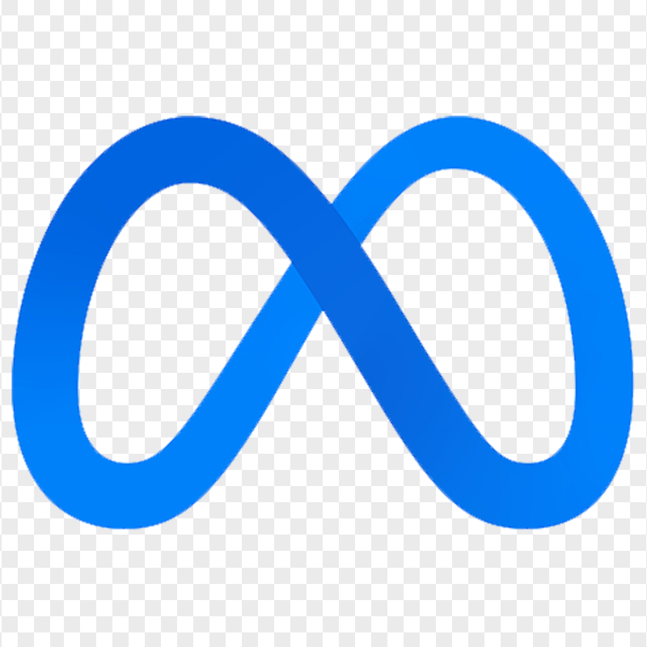

Leaderboard
| # | Model | Harness | Effort | Combined score | Tokens | Cost | |
|---|---|---|---|---|---|---|---|
| 1 | cursor-agent 2026.08.11 | High | 0.552 ± 0.022 | 438K | $2.38 | ||
| 1 | CAMEL 0.2.90 · Single | High | 0.538 ± 0.016 | 90K | $1.77 | ||
| 1 | claude code 2.1.152 | High | 0.533 | 757K | $12.04 | ||
| 2 | cursor-agent 2026.07.01 | Med | 0.517 | 161K | $1.83 | ||
| 3 | codex 0.144 · high | High | 0.507 | 354K | $4.49 | ||
| 4 | claude code 2.1.152 | High | 0.504 | — | — | ||
| 5 | claude code 2.1.219 | High | 0.490§ | — | — | ||
| 6 | claude code 2.1.215 | High | 0.484 | — | — | ||
| 7 | cursor-agent 2026.06.15 | — | 0.448 | 120K | — | ||
| 8 | claude code 2.1.152 | High | 0.446§ | 252K | $3.85 | ||
| 9 | claude code 2.1.152 · z.ai | Max | 0.438 | 304K | $3.66 | ||
| 10 | codex 0.144.6 · high | High | 0.413 | — | — | ||
| 11 | codex 0.144.6 · med | Med | 0.385 | — | — | ||
| 12 |  Muse-Spark-1.1 | claude code 2.1.205 · api.meta.ai | — | 0.384§ | 3.8M‡ | $5.16 | |
| 13 | codex 0.134 | Med | 0.358 | 611K | $1.68 | ||
| 14 | CAMEL · Workforce | Med | 0.357 | — | — | ||
| 15 |  MAI-Code-1-Flash MAI-Code-1-Flash | copilot 1.0.68 | — | 0.326 | 7.4M† | — | |
Agents are ranked by the Combined score S — DOM-grounded localization × behavior on human-annotated UI anchors, scored under the content-based interaction criterion (a click counts only if it produces the corresponding observable content change), averaged over 10 apps (failures count as 0). Each model runs on its latest harness release with a complete 10-app batch (Codex-CLI 0.134–0.144.6 / Claude Code up to 2.1.215 / Cursor / Copilot / CAMEL), free choice of stack. Where repeated complete batches are available, ± SD is the sample standard deviation of the independent 10-app batch means; Grok 4.6 + Cursor and GPT-5.6-sol + CAMEL each use three complete batches (n=3, 30 valid task runs). §Rows marked § are averaged over fewer than 10 apps (Opus 5 over 9/10; Sonnet 4.6 and Muse-Spark over 8/10) — a few apps' containers no longer build (environment drift) and are excluded rather than scored 0. Condition C4 gives the agent the richest spec: the page's rendered Figma image (a screenshot mockup) and its pruned Figma structure (the layout tree as JSON) — but no target framework.
Each harness exposes a different reasoning-effort ladder, so levels aren't directly comparable. The highlighted dot marks the level each model ran at; the row length shows the granularity available. Notably, GLM-5.2 ran at its ceiling (max), while the Claude and Codex models still had headroom above the level used.
 Antigravity (3 levels: low · medium · high) — Gemini 3.5 Flash
Antigravity (3 levels: low · medium · high) — Gemini 3.5 Flash
Cursor Composer 2.5 runs at its agent default; its effort ladder isn't published in a directly comparable form.
Cost & speed
Median over the available task runs — normally one 10-app batch; Grok 4.6 + Cursor and CAMEL 0.2.90 each use all three complete batches (30 runs). The median is outlier-robust, so a single runaway or oversized task doesn't skew a model's value. Bars are colored by token type.
Trajectory audit: token and time values were recomputed from each run's terminal usage/result event. Unless noted, each row uses its named complete 10-task C4 trajectory group. Grok 4.6 and CAMEL each use 30 valid runs (three batches). Grok 4.6's archived zero-score attempt is excluded and replaced by the valid 0.505 rerun. Composer 2.5 has only 8 parseable terminal result events, so its 1.9M / 10.2m medians are n=8. The chart's Opus 4.8, Opus 4.7 and GPT-5.5 data come from the locally archived Claude Code 2.1.152, Claude Code 2.1.152 and Codex 0.134 trajectories respectively; the harness sublabels make this explicit even where the leaderboard above has a newer scored harness.
How tokens are counted: leaderboard Tokens uses non-cached input + output so cache re-reads do not make multi-turn harnesses look artificially heavy. The stacked chart shows cached input, non-cached input, and output. Grok 4.6's 30-run medians are 3.786M cached input, 358.2K non-cached input, 77.7K output, and 438.4K non-cached input + output. For CAMEL 0.2.90, the corresponding medians are 1.356M, 66.8K, 21.9K, and 90.2K. Claude/Cursor use input + cache-creation + output; Codex/CAMEL use (input − cached) + output. Codex's output_tokens already includes its reasoning_output_tokens; the latter must not be added again. GLM-5.2 totals come from each run's terminal result, since z.ai's endpoint leaves per-message usage empty.
How cost is estimated: median API cost per task = each run's captured billed tokens × provider pricing, then the median across task runs. GPT-5.6-sol uses OpenAI's $5 / $0.50 / $30; GPT-5.4-mini uses $0.75 / $0.075 / $4.50; GLM-5.2 uses z.ai's $1.40 / $0.26 / $4.40 input/cached/output rates. Recomputed medians are Sol/Codex $4.49, GPT-5.4-mini $1.68, GLM-5.2 $3.66, and Muse-Spark $5.16 using the captured Meta rate card. Claude rows use the CLI's own total_cost_usd (fable-5 $12.04; Sonnet 4.6 $3.85). GPT-5.6-sol + CAMEL is an estimate of $1.77/task / $57.01 for 30 runs, including the documented 1.25× cache-write premium; without it, $1.68/task. Grok 4.6 is a theoretical estimate of $2.38/task / $71.04 for 30 runs using captured tokens and Grok 4.5 public rates as a proxy because Cursor reports no USD total; it is not an observed bill. Grok 4.5's $1.83 is from Cursor's dashboard total and cannot be independently reconstructed from trajectory pricing.
Co-evolution
An agent is a model inside a harness, and both ship on their own cadence. Tracking the same model across harness releases shows the two co-evolving — sometimes lifting each other, sometimes regressing. Combined score by harness release.
Mean C4 combined score (n=10, failures scored 0). Codex-CLI and Claude Code use independent version schemes, shown as separate panels.
How it's scored
Each task asks an agent to build and launch a multi-page web app from a visual spec. We bring the app up in Docker and, for every human-annotated UI anchor, match it to a rendered DOM element — scoring localization L (IoU / distance to the mockup position) and behavior B (interaction-specific browser checks). The headline Combined score is S = mean(L · B) over the critical anchors.